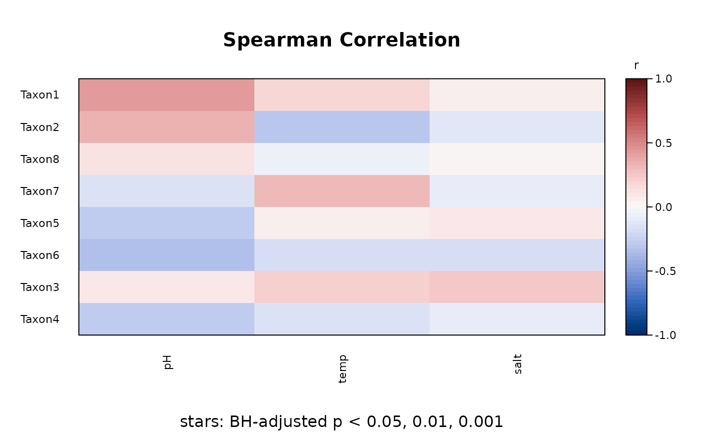

Correlates every feature of one table (taxa) with every variable of
another measured on the same samples (environmental factors, metabolites,
clinical variables): the correlation, its p-value and a p-value adjusted
for testing every pair. plot() draws the familiar heatmap with stars on
the significant cells.
Usage
cross_assoc(
x,
y,
data = NULL,
method = "spearman",
margin = 1L,
norm = "percent",
y_norm = "none",
pseudocount = NULL,
given = NULL,
permutations = 0L,
strata = NULL,
alpha = 0.05,
p_adjust = "BH",
min_samples = 3L,
seed = 0L,
cpus = n_cpus()
)Arguments
- x
A count table (samples \(\times\) features), or any of the objects listed under Input Types, or any numeric table (metabolites, host gene expression) with
norm = 'none'.- y
The second table, with samples in rows: a numeric matrix, a data frame of numeric or logical columns, a numeric vector (one variable), or a count table. Or, with
data, the names of columns ofdata. Logical columns become 0/1; factor and character columns are an error. May containNAs (see Missing values). Samples are matched tox's by name when both have names, otherwise taken in the same order.- data
A data frame of sample metadata, with one row per sample, for
y,givenandstratagiven as column names (orgivenas a formula). Rows are matched tox's samples by name when it has row names, otherwise taken in the same order. Default:NULL.- method
The correlation coefficient:
'spearman'(the default),'pearson', or'kendall'(tau-b).- margin
The margin containing samples.
1if samples are rows,2if samples are columns. Ignored whencountsis a special object class (e.g.phyloseq). Default:1- norm
How
xis transformed first: any ofnormalize()'s norms ('percent','clr','log','rclr','hellinger', ...,'none'). Default:'percent'(relative abundances).- y_norm
How
yis transformed first, asnorm. Default:'none'. Any other choice needsyto be a table of non-negative values withoutNAs, such as a second count table.- pseudocount
For
normory_norm'clr'or'log': the value added to every count first. See Pseudocount.- given
Covariates to partial out, for partial correlations: a one-sided formula over the columns of
data(such as~ age + sex), the names of columns ofdata, or a data frame or matrix with one row per sample. Not available for Kendall. Samples withNAingivenare left out of everything, with a warning. Default:NULL.- permutations
0(the default) for p-values from the coefficient's distribution (see P-values); a number of permutations for permutation p-values; or a matrix with one permutation of1:nper row (nthe samples), to use instead of random ones.- strata
Permute samples only within these groups (blocks), for designs such as repeated measures. With
data, the name of one of its columns, or a vector with one value per row ofdata. Withoutdata, a vector with one value per sample, matched to the samples by name when it has names, otherwise in the same order. Default:NULL(free permutation).- alpha
The significance level of the adjusted p-values:
rejectisp_adjusted <= alpha. Default:0.05.- p_adjust
How to adjust the p-values for testing every pair: any method of
stats::p.adjust(), over all the pairs at once. Default:'BH'(Benjamini-Hochberg false discovery rate).- min_samples
Pairs with fewer samples (after leaving out
NAs) getNA. At least 3 (the default), more withgiven.- seed
An integer seed for the random permutations. Default:
0.- cpus
How many parallel processing threads should be used. The default,
n_cpus(), is the CPU cores this R process may use, within any limits set on it. Results are the same for anycpus.
Value
A data frame of class c("ecodive_cross_assoc", "data.frame")
with one row per pair, in x-major order (all of y for the first
feature of x, then the next), and columns:
x,y: the feature and the variable (their input positions, as text, when unnamed);association: the correlation;statistic: Student's t (Pearson, Spearman) or the normal z (Kendall) behind the p-value;p_value,p_adjustedandreject(p_adjusted <= alpha);n: the samples used, when this differs between pairs (withNAs iny).
Attributes: method ("spearman", "pearson" or "kendall"),
alpha, p_adjust, n_samples, given (the covariates' names, with
given), n_perm (with permutations), and x_features, y_features
(each table's names in input order).
as.matrix(res) gives the \(p \times q\) matrix of correlations
(features of x in rows), and as.matrix(res, 'p_adjusted') that of
any other column. plot(res) draws it as a heatmap: see
plot.ecodive_cross_assoc().
Details
Pearson's \(r\) correlates the (transformed) values; Spearman's
\(\rho\) is Pearson's \(r\) of their ranks (ties given their average
rank); Kendall's \(\tau_b\) counts concordant and discordant pairs of
samples, corrected for ties. All three are the values of
stats::cor().
Which transformation. Spearman and Kendall depend only on the order
of each feature's values across samples, so transformations of one
feature at a time (logs, ranks) don't change them. Transformations of one
sample at a time do: relative abundances (norm = 'percent', the
default, and what most papers correlate) rank the samples differently
from raw counts. Relative abundances are compositional, so a taxon can
appear to correlate with a variable only because other taxa do (closure;
see vlr()); norm = 'clr' (with pseudocount) is the safer choice,
with any method. With many zeros, Spearman's \(\rho\) on relative
abundances is dominated by presence and absence: every zero gets the same
rank.
Partial correlations (given): both tables' values (their ranks,
for Spearman, and the covariates' ranks too) are residualised on the
covariates (with an intercept) by least squares, and the result is
Pearson's \(r\) of the residuals, with \(n - 2 - k\) degrees of
freedom for \(k\) covariates. This is ppcor::pcor.test()'s
definition.
Speed. The correlations are computed in C, in parallel over the
features of x, without forming the joint \((p + q) \times (p + q)\)
matrix that stats::cor() of the two tables bound together computes.
Sparse tables stay sparse: the sums run over each feature's non-zero
samples only.
P-values
With permutations = 0, Pearson's and Spearman's p-values are
two-sided, from Student's \(t = r \sqrt{(n - 2 - k) / (1 - r^2)}\)
with \(n - 2 - k\) degrees of freedom (\(k = 0\) without given),
as scipy.stats.pearsonr() and spearmanr(), Hmisc::rcorr() and
psych::corr.test() compute them. \(|r| = 1\) gives \(p = 0\).
Kendall's is the normal approximation with the tie-corrected variance
(Kendall 1970), as scipy.stats.kendalltau(method = 'asymptotic').
With permutations, the rows of y are permuted, the same permutation
for every pair (which keeps the correlations within each table), and
\(p = (1 + \#\{|r_b| \ge |r|\}) / (B + 1)\) for \(B\)
permutations. With given, the residuals of y are permuted (ter
Braak 1992). With NAs in y, the variables with the same samples
missing share their permutations, of their own samples; a
permutations matrix then can't be used.
The p-values are then adjusted over all \(p \times q\) pairs at once (Benjamini & Hochberg 1995 by default). None of these p-values allows for the correlations between taxa, or between variables, which make the pairs' tests far from independent.
Missing values
x can't contain NAs. Each pair uses the samples where its y
variable is not NA (pairwise complete observations, as
Hmisc::rcorr() and cor(use = 'pairwise.complete.obs')), and the
ranks are taken over those samples. Pairs with fewer than
min_samples samples, and pairs with a feature or variable that is
constant over their samples, get NA (the latter with a warning, as
stats::cor()).
Differences from cor.test(), Hmisc, psych and microeco
stats::cor.test()gives Spearman's p-value from the exact distribution of \(\rho\) (AS 89) for fewer than 1290 samples without ties, and Kendall's from its exact distribution for fewer than 50 samples without ties;cor.test(exact = FALSE)gives the approximations used here (the same values, ties included).Hmisc::rcorr()correlates the two tables bound together, the whole \((p + q) \times (p + q)\) matrix, with the same p-values; it computes them as one minus a probability, so those below about \(10^{-8}\) are accurate only to about \(10^{-16}\) absolutely. It doesn't adjust them.psych::corr.test(x, y, adjust = 'BH')gives the same values and p-values, adjusted over the \(p \times q\) pairs, as here.microeco's
trans_env$cal_cor(method = 'spearman')usesstats::cor.test(), so its p-values are exact (above) for pairs without ties; by default (p_adjust_type = 'All') it adjusts over all pairs too, and it can instead adjust within each taxon or each variable.ppcor::pcor.test()gives the same partial correlations and p-values, one pair at a time (ranking the covariates too, for Spearman).
Pseudocount
The pseudocount parameter is only relevant when norm = 'clr'
or norm = 'log'.
Zeros are undefined in the centered log-ratio (CLR) transformation and
in the log of proportions. If norm is 'clr' or
'log', pseudocount is NULL (the default), and
zeros are detected, the function uses half the minimum non-zero value
(min(x[x>0]) / 2) and issues a warning.
To suppress the warning, provide an explicit value (e.g., 1), or
replace the zeros first with replace_zeros(), whose
result needs no pseudocount.
Why this matters: The choice of pseudocount is not neutral; it acts as a weighting factor that can significantly distort downstream results, especially for sparse datasets. See Gloor et al. (2017) and Kaul et al. (2017) for open-access discussions on the mathematical implications, or Costea et al. (2014) for the impact on community clustering.
See aitchison for references.
Input Types
The counts parameter is designed to accept a simple numeric matrix, but
seamlessly supports objects from the following biological data packages:
phyloseqrbiomSummarizedExperimentTreeSummarizedExperiment
For large datasets, standard matrix operations may be slow. See
vignette('performance') for details on using optimized formats
(e.g. sparse matrices) and parallel processing.
References
Benjamini, Y., & Hochberg, Y. (1995). Controlling the false discovery rate: a practical and powerful approach to multiple testing. Journal of the Royal Statistical Society B, 57, 289–300. doi:10.1111/j.2517-6161.1995.tb02031.x
Kendall, M. G. (1970). Rank Correlation Methods (4th ed.). Griffin.
Knight, W. R. (1966). A computer method for calculating Kendall's tau with ungrouped data. Journal of the American Statistical Association, 61, 436–439. doi:10.1080/01621459.1966.10480879
Spearman, C. (1904). The proof and measurement of association between two things. American Journal of Psychology, 15, 72–101. doi:10.2307/1412159
ter Braak, C. J. F. (1992). Permutation versus bootstrap significance tests in multiple regression and ANOVA. In K.-H. Jöckel, G. Rothe, & W. Sendler (Eds.), Bootstrapping and Related Techniques (pp. 79–86). Springer.
See also
plot.ecodive_cross_assoc(); feature_assoc(), rho_p() and
sparcc() for associations between the features of one table;
envfit() to fit variables onto an ordination.
Examples
# Taxa against three simulated environmental variables
set.seed(1)
counts <- matrix(rpois(30 * 8, 20), 30, 8,
dimnames = list(paste0('S', 1:30), paste0('Taxon', 1:8)))
env <- data.frame(
pH = counts[, 1] / 10 + rnorm(30),
temp = rnorm(30, 15),
salt = c(rnorm(28), NA, NA),
row.names = rownames(counts) )
res <- cross_assoc(counts, env)
res
#> # A data.frame: 24 × 8
#> # Spearman Correlation: 8 x 3 features, 0 pairs with BH-adjusted p <= 0.05
#> x y association statistic p_value p_adjusted reject n
#> <chr> <chr> <dbl> <dbl> <dbl> <dbl> <lgl> <int>
#> 1 Taxon1 pH 0.432 2.53 0.0172 0.412 FALSE 30
#> 2 Taxon1 temp 0.186 0.999 0.326 0.73 FALSE 30
#> 3 Taxon1 salt 0.0547 0.28 0.782 0.822 FALSE 28
#> 4 Taxon2 pH 0.347 1.96 0.0604 0.466 FALSE 30
#> 5 Taxon2 temp -0.303 -1.68 0.103 0.466 FALSE 30
#> 6 Taxon2 salt -0.132 -0.679 0.503 0.795 FALSE 28
#> 7 Taxon3 pH 0.102 0.543 0.591 0.795 FALSE 30
#> 8 Taxon3 temp 0.215 1.16 0.255 0.679 FALSE 30
#> 9 Taxon3 salt 0.236 1.24 0.227 0.679 FALSE 28
#> 10 Taxon4 pH -0.279 -1.54 0.136 0.466 FALSE 30
#> # … 14 more rows
#> # Use print(x, n = ...) to see more rows
#> # Attributes: method, alpha, p_adjust, n_samples, x_features, y_features
# The p x q matrix of correlations
round(as.matrix(res), 2)
#> pH temp salt
#> Taxon1 0.43 0.19 0.05
#> Taxon2 0.35 -0.30 -0.13
#> Taxon3 0.10 0.21 0.24
#> Taxon4 -0.28 -0.14 -0.10
#> Taxon5 -0.29 0.06 0.08
#> Taxon6 -0.34 -0.17 -0.18
#> Taxon7 -0.15 0.30 -0.10
#> Taxon8 0.11 -0.05 0.02
plot(res)
